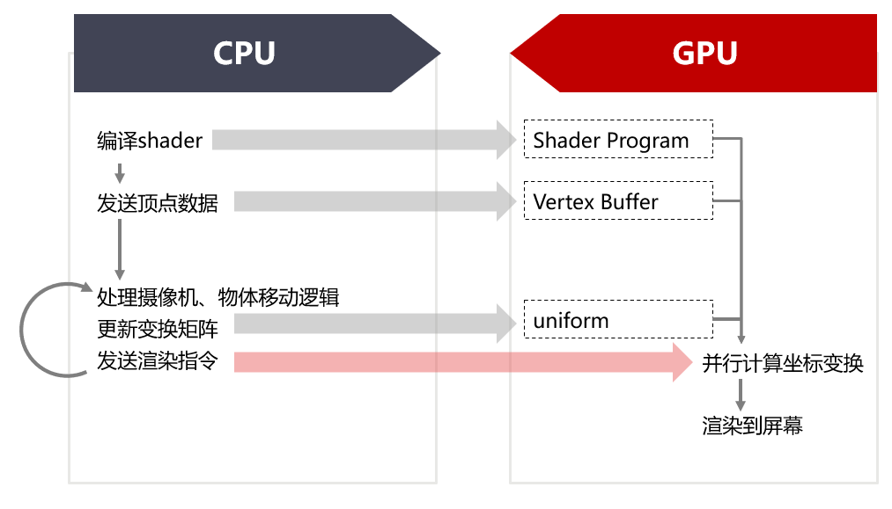

渲染管线概览

程序开始运行时，会立即加载一些预先写好的shader文件，传入GPU中。这些shader程序在之后的渲染中不需要再更改，可以重复应用于不同物体的渲染。
每当有新的点云被加载时，CPU会创建一个新的VertexBufferObject并且放入显存。如果要动态修改顶点数据的话，就需要重新初始化顶点缓冲并传输数据到显存。不过由于漫游过程中模型数据一般不改变，改变的仅仅是变换矩阵，所以不需要反复传输顶点数据。
每次渲染时，需要重新计算世界坐标到相机坐标的变换矩阵，对于每个物体，都要重新计算物体到世界坐标的变换矩阵。渲染时，将模型、相机、视口变换矩阵以uniform的方式传递到shader中参与计算。
上述流程中，修改缓冲的操作耗时较多，但只用做一次；矩阵计算与传递每帧都要进行，但是耗时较短，最大程度优化了性能。
坐标变换
坐标系定义
模型坐标系
定义为点云文件中储存点位置时所用的坐标系。
世界坐标系
定义为模型到相机的中间坐标系。这个坐标系是为了方便实现相机移动而定义的。实际上相机移动等价于将模型反方向移动，但是定义一个固定的世界坐标系让相机和模型分别相对于世界坐标系移动能够让我们更直观地观察和表达相机运动。
相机坐标系
定义为固定在相机上的坐标系。其x轴指向画面右侧，y轴指向画面上方，z轴垂直于画面指向相机后方。
变换阵构造
模型->世界坐标
模型本身的变换可以用平移、旋转和缩放三个要素来表达。
\[ \text{MAT_MODEL}= \begin{bmatrix} I_{3\times 3} & T_{3 \times 1} \\ 0 & 1 \\ \end{bmatrix} \cdot \begin{bmatrix} R_{3\times 3} & 0 \\ 0 & 1 \\ \end{bmatrix} \cdot \begin{bmatrix} S_{3\times 3} & 0 \\ 0 & 1 \\ \end{bmatrix} \]
世界->相机坐标
相机的变换可以用平移、旋转两个要素表达。描述平移旋转时为了直观，是以相机相对于世界坐标的方式表述的，所以求世界坐标到相机坐标的变换阵时取逆。
\[ \text{MAT_VIEW}= \begin{bmatrix} R & T \\ 0 & 1 \\ \end{bmatrix} ^ {-1} = \begin{bmatrix} R^T & -R^{T}T \\ 0 & 1 \\ \end{bmatrix} \]
相机->视口坐标
从相机到视口需要经过透视变换；这个透视变换可以分解为线性变换和透视除法。
\[ \text{MAT_PERSPECTIVE}= \begin{bmatrix} \cot{\theta_x} & 0 & 0 & 0 \\ 0 & \cot{\theta_y} & 0 & 0 \\ 0 & 0 & -\frac {f+n}{f-n} & -\frac{2fn}{f-n} \\ 0 & 0 & -1 & 0 \\ \end{bmatrix} \]
将上述矩阵左乘坐标向量，得到的结果进行透视除法，即将向量除以自身的第四个分量，就转换到了视口坐标。
OpenGL的使用
编译shader
使用OpenGL的QOpenGLShaderProgram类来编译和加载顶点着色器和片元着色器的源文件。
Widget.cpp:
QOpenGLShaderProgram* loadShader(const std::string& name) {
auto res = new QOpenGLShaderProgram();
res->addShaderFromSourceFile(QOpenGLShader::Vertex, ("./shaders/" + name + ".vert").c_str());
res->addShaderFromSourceFile(QOpenGLShader::Fragment, ("./shaders/" + name + ".frag").c_str());
res->link();
res->enableAttributeArray(0);
res->enableAttributeArray(1);
return res;
}
顶点缓冲的初始化和绑定
PointCloudRenderer.cpp:
m_vertexBuffer->create();
m_vertexBuffer->bind();
m_vertexBuffer->setUsagePattern(QOpenGLBuffer::StaticDraw);
m_vertexBuffer->allocate(vertices.data(), vertices.size() *
sizeof(
Vertex));
渲染
首先绑定shader和buffer，随后调用OpenGL的glUniformMatrix4fv传入变换阵，glUniformxxx传入其他类型的各种变量，再调用glDrawArrays并传入GL_POINTS选项来绘制点云。
PointCloudRenderer.cpp
{
if (modified) {
modified = false;
}
if (m_vertexBuffer == NULL) return;
m_vertexBuffer->bind();
shader->setAttributeBuffer(0, GL_FLOAT, Vertex::positionOffset(), Vertex::PositionTupleSize, Vertex::stride());
shader->setAttributeBuffer(1, GL_FLOAT, Vertex::colorOffset(), Vertex::ColorTupleSize, Vertex::stride());
gl->glUniformMatrix4fv(
shader->uniformLocation(
"MAT_PROJ"), 1, GL_FALSE, glm::value_ptr(projection));
gl->glUniformMatrix4fv(
shader->uniformLocation(
"MAT_VIEW"), 1, GL_FALSE, glm::value_ptr(view));
gl->glUniformMatrix4fv(
shader->uniformLocation(
"MAT_MODEL"), 1, GL_FALSE, glm::value_ptr(model));
QVector3D highlightColor =
getProp(
"highlightColor").value<QVector3D>();
float sizeScale =
getProp(
"sizeScale").toFloat();
if (highlight) {
gl->glDepthMask(GL_FALSE);
gl->glUniform1f(
shader->uniformLocation(
"sizeScale"), sizeScale * 2);
gl->glUniform1f(
shader->uniformLocation(
"sizeAbsolute"), 10);
gl->glUniform4f(
shader->uniformLocation(
"colorOverride"), highlightColor.x(), highlightColor.y(), highlightColor.z(), 1.0);
gl->glDrawArrays(GL_POINTS, 0, vertices.size());
gl->glDepthMask(GL_TRUE);
}
gl->glUniform1f(
shader->uniformLocation(
"sizeScale"), sizeScale);
gl->glUniform1f(
shader->uniformLocation(
"sizeAbsolute"), 0);
gl->glUniform4f(
shader->uniformLocation(
"colorOverride"), 1.0, 0.5, 0.0, 0.0);
gl->glDrawArrays(GL_POINTS, 0, vertices.size());
m_vertexBuffer->release();
}
 1.8.11
1.8.11